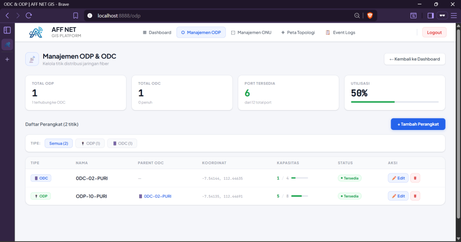
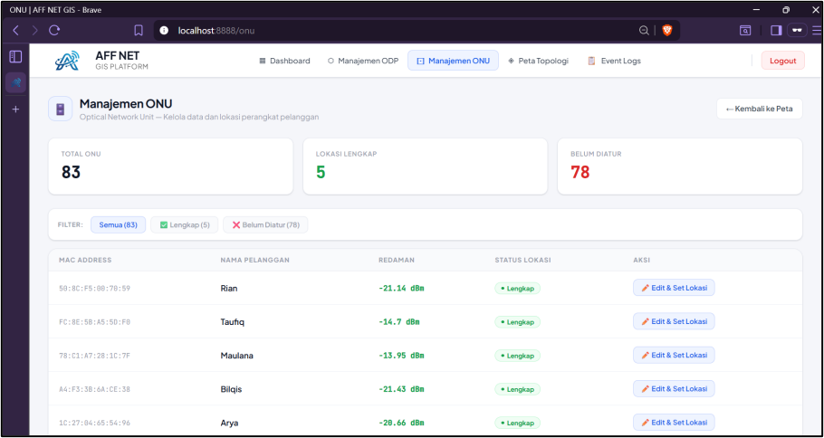
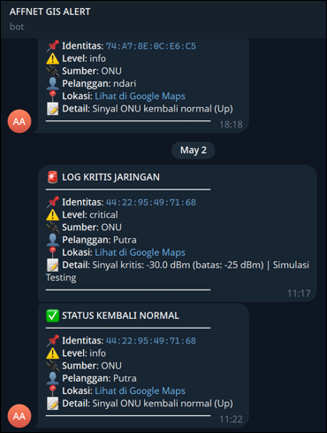

Overview
A real-time monitoring system for a Fiber-to-the-Home (FTTH) network, built for an internet service provider (AFF NET). The system integrates SNMP polling with a Geographic Information System so that field devices can be tracked both by status and by physical location.
The challenge
- The ISP's fiber devices were scattered across a wide geographic area with no unified, real-time view of their operational status.
- Faults were discovered late, usually after customers reported outages rather than through proactive detection.
The approach
- Built backend services in Golang to collect, process, and synchronize monitoring data pulled from Zabbix.
- Developed an interactive web dashboard with ReactJS and Leaflet.js to visualize devices and their status on a live map.
- Implemented automated Telegram notifications so the operations team is alerted the moment a fault occurs.
- Deployed on AWS EC2, tunnelling cloud infrastructure to the on-premises network with WireGuard VPN.
The result
- A single real-time dashboard replaced manual, reactive fault checking.
- Faster troubleshooting through instant Telegram alerts tied to exact device locations.
- A secure, low-latency bridge between cloud and on-premises infrastructure via WireGuard.
Gallery & System Architecture



System Architecture Diagram

Next project
RouteRush
↗